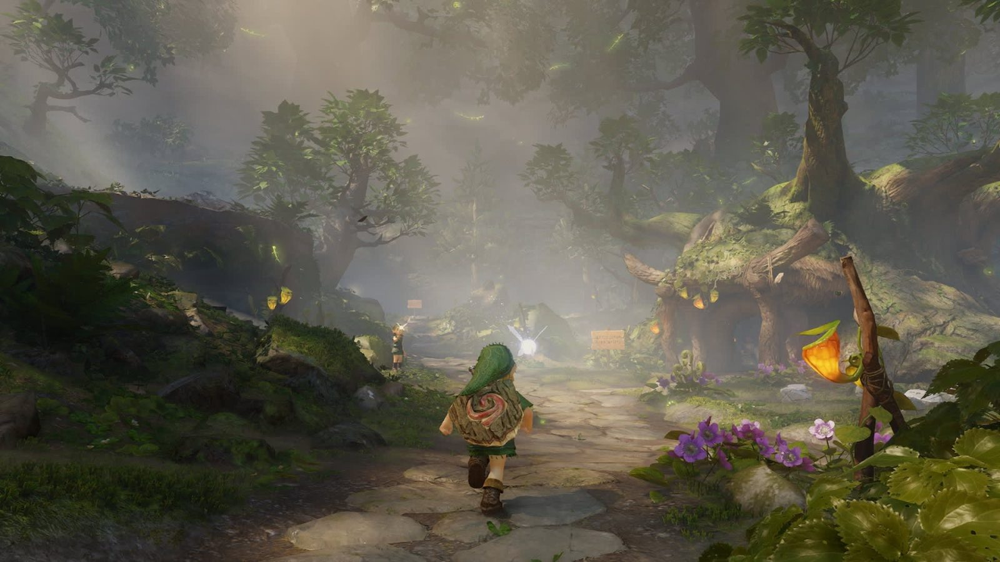
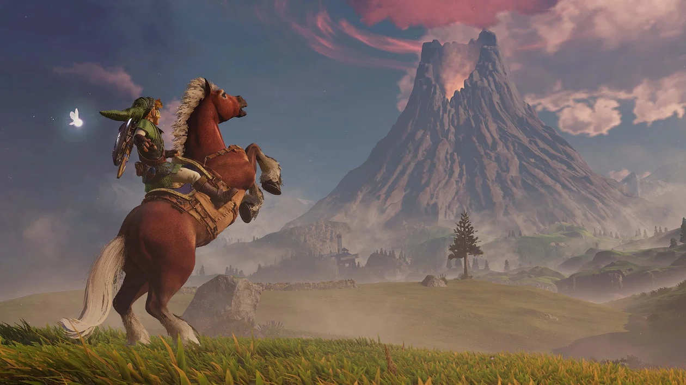
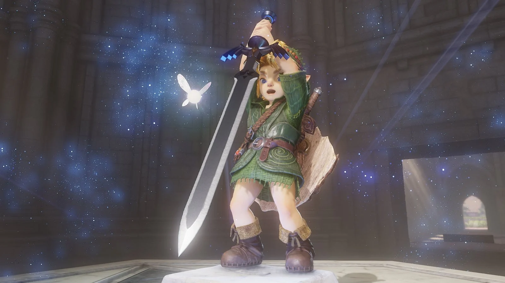

A quasi 30 anni di distanza dall'uscita dell'originale The Legend of Zelda Ocarina of Time, uscito allora per Nintendo 64 nel 1998, arriva il suo secondo remake: The Legend of Zelda Ocarina of Time per Nintendo Switch 2. L'originale Ocarina of Time è uno dei capolavori assoluti nel mondo del gaming. Un gioco che ha rivoluzionato per sempre la serie di The Legend of Zelda e non solo, con uno dei voti della critica più alti di sempre (99/100). Il remake di The Legend of Zelda Ocarina of Time è un remake conservativo, che preserva l'identità del gioco originale alterando ben poco della sua struttura ma rivestendolo con una nuova veste grafica degna della generazione corrente e "svecchiando" il sistema di controlli. A prescindere da questo, The Legend of Zelda Ocarina of Time rimane il capolavoro che era, facendosi valere anche dopo quasi tre decenni dalla sua release originale e ottenendo nuovamente uno dei voti della critica più alti di sempre (96/100). Un gioco che ti tiene incollato per ore piene di puzzle, storia e combattimenti, il tutto arricchito dalle sue magnifiche ambientazioni, musiche e personaggi.



